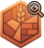

CatanSight
Strategic overlays for colonist.io
Checking...
Features
All On
All Off
Pip Overlay
Show pip counts at intersections
Resource Scarcity
Board-wide resource analysis
Dice Tracker
Roll histogram & hot/cold numbers
Resource Income
Per-player resource tracking
Port Proximity
Nearby port indicators
Overlay Opacity
90%
Calibrate Overlay Position